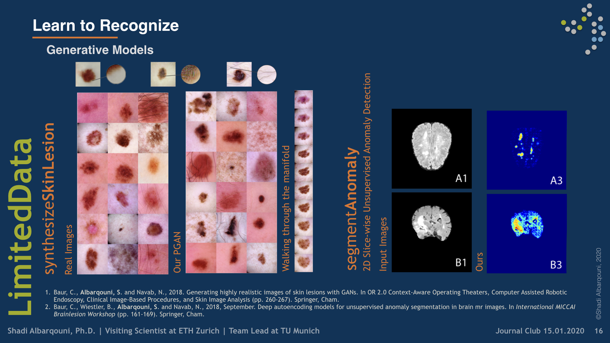
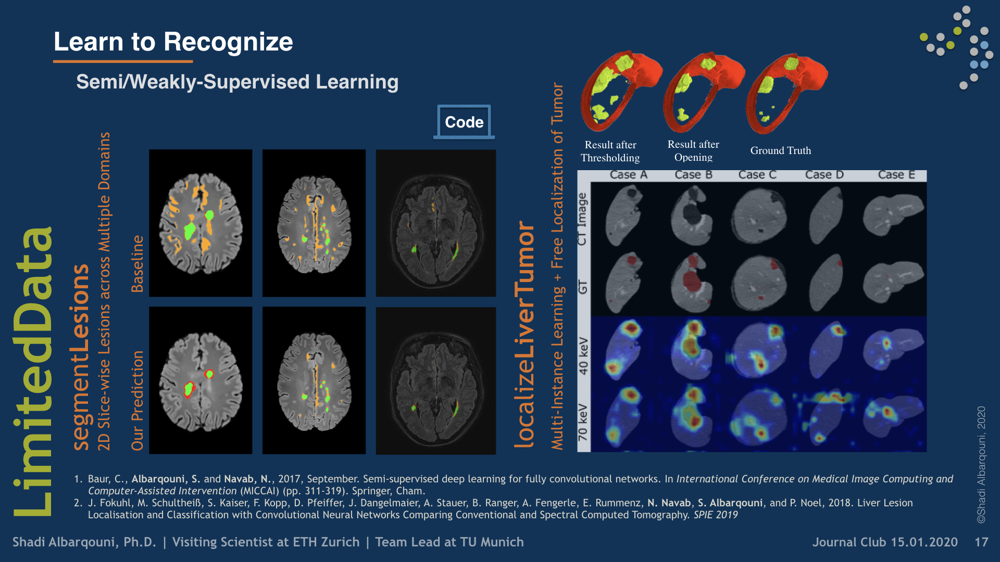

Learn to Recognize
 Illustrative figure by Shadi Albarqouni
Illustrative figure by Shadi Albarqouni
We started investigating Convolutional Neural Networks for Object Recognition in a supervised fashion, for example, mitotic figure detection in histology imaging (Albarqouni et al. 2016), Catheter electrodes detection and depth estimation in Interventional Imaging (Baur et al. 2016), femur fracture detection in radiology (Kazi et al. 2017), in-depth layer X-ray synthesis (Albarqouni et al. 2017), and pose estimation of mobile X-rays (Bui et al. 2017). One of the first work which has been highly recognized and featured in the media is AggNet (Albarqouni et al. 2016) for Mitotic figure detection in Histology Images. Although the network architecture was shallow, it was trained using millions of multi-scale RGB patches of histology images, achieving outstanding performance (ranked 3rd among 15 participants in AMIDA13 challenge).
During our work, we found out such data-driven models demand a massive amount of annotated data, which might not be available in medical imaging and can not be mitigated by simple data augmentation. Besides, we found out such models are so sensitive to domain shift, i.e., different scanner, and methods such as domain adaptation is required. Therefore, we have focused our research directions to develop fully-automated, high accurate solutions that save export labor and efforts, and mitigate the challenges in medical imaging. For example, i) the availability of a few annotated data, ii) low inter-/intra-observers agreement, iii) high-class imbalance, iv) inter-/intra-scanners variability and v) domain shift.

To mitigate the problem of limited annotated data, we developed models that Learn from a Few Examples by i) leveraging the massive amount of unlabeled data via semi-supervised techniques (Baur and Albarqouni et al. 2017), ii) utilizing weakly labeled data, which is way cheaper than densely one (Kazi et al. 2017), iii) generating more examples through modeling the data distribution (Baur et al. 2018), and finally by iv) investigating unsupervised approaches (Baur et al. 2018, Baur et al. 2019).

Collaboration:
- Prof. Peter Nöel, Department of Radiology, University of Pennsylvania, USA
- Prof. Guillaume Landry, Department of Radiation Oncology, Medical Center of the University of Munich, Germany
- Dr. Benedikt Wiestler, TUM Neuroradiologie, Klinikum rechts der Isar, Germany
- Prof. Dr. med. Sonja Kirchhoff, Klinikum rechts der Isar, Germany
- Prof. Diana Mateus, Ecole Centrale Nantes, France
- Prof. Andreas Maier, Friedrich-Alexander-Universität Erlangen-Nürnberg, Germany
- Prof. Pascal Fallavollita, Ottawa University, Canada
Funding:
- Siemens Healthineers
- Siemens AG
Shadi Albarqouni
Professor of Computational Medical Imaging Research at University of Bonn | AI Young Investigator Group Leader at Helmholtz AI | Affiliate Scientist at Technical University of Munich
Publications

Lvm-med: Learning large-scale self-supervised vision models for medical imaging via second-order graph matching
Obtaining large pre-trained models that can be fine-tuned to new tasks with limited annotated samples has remained an open challenge for medical imaging data. While pre-trained deep networks on ImageNet and vision-language foundation models trained on web-scale data are prevailing approaches, their effectiveness on medical tasks is limited due to the significant domain shift between natural and medical images. To bridge this gap, we introduce LVM-Med, the first family of deep networks trained on large-scale medical datasets. We have collected approximately 1.3 million in medical images from 55 publicly available datasets, covering a large number of organs and modalities such as CT, MRI, X-ray, and Ultrasound. We benchmark several state-of-the-art self-supervised algorithms on this dataset and propose a novel self-supervised contrastive learning algorithm using a graph matching formulation. The proposed approach makes three contributions: (i) it integrates prior pair-wise image similarity metrics based on local and global information; (ii) it captures the structural constraints of feature embeddings through a loss function constructed via a combinatorial graph-matching objective; and (iii) it can be trained efficiently end-to-end using modern gradient-estimation techniques for black-box solvers. We thoroughly evaluate the proposed LVM-Med on 15 downstream medical tasks ranging from segmentation and classification to object detection, and both for the in and out-of-distribution settings. LVM-Med empirically outperforms a number of state-of-the-art supervised, self-supervised, and foundation models. For challenging tasks such as Brain Tumor Classification or Diabetic Retinopathy Grading, LVM-Med improves previous vision-language models trained on 1 billion masks by 6-7% while using only a ResNet-50. We release pre-trained models at this link https://github.com/duyhominhnguyen/LVM-Med.

Autoencoders for Unsupervised Anomaly Segmentation in Brain MR Images: A Comparative Study
Deep unsupervised representation learning has recently led to new approaches in the field of Unsupervised Anomaly Detection (UAD) in brain MRI. The main principle behind these works is to learn a model of normal anatomy by learning to compress and recover healthy data. This allows to spot abnormal structures from erroneous recoveries of compressed, potentially anomalous samples. The concept is of great interest to the medical image analysis community as it i) relieves from the need of vast amounts of manually segmented training data—a necessity for and pitfall of current supervised Deep Learning—and ii) theoretically allows to detect arbitrary, even rare pathologies which supervised approaches might fail to find. To date, the experimental design of most works hinders a valid comparison, because i) they are evaluated against different datasets and different pathologies, ii) use different image resolutions and iii) different model architectures with varying complexity. The intent of this work is to establish comparability among recent methods by utilizing a single architecture, a single resolution and the same dataset(s). Besides providing a ranking of the methods, we also try to answer questions like i) how many healthy training subjects are needed to model normality and ii) if the reviewed approaches are also sensitive to domain shift. Further, we identify open challenges and provide suggestions for future community efforts and research directions.

Multi-task multi-domain learning for digital staining and classification of leukocytes
oking stained images preserving the inter-cellular structures, crucial for the medical experts to perform classification. We achieve better structure preservation by adding auxiliary tasks of segmentation and direct reconstruction. Segmentation enforces that the network learns to generate correct nucleus and cytoplasm shape, while direct reconstruction enforces reliable translation between the matching images across domains. Besides, we build a robust domain agnostic latent space by injecting the target domain label directly to the generator, i.e., bypassing the encoder. It allows the encoder to extract features independently of the target domain and enables an automated domain invariant classification of the white blood cells. We validated our method on a large dataset composed of leukocytes of 24 patients, achieving state-of-the-art performance on both digital staining and classification tasks.

6D Camera Relocalization in Ambiguous Scenes via Continuous Multimodal Inference
We present a multimodal camera relocalization framework that captures ambiguities and uncertainties with continuous mixture models defined on the manifold of camera poses. In highly ambiguous environments, which can easily arise due to symmetries and repetitive structures in the scene, computing one plausible solution (what most state-of-the-art methods currently regress) may not be sufficient. Instead we predict multiple camera pose hypotheses as well as the respective uncertainty for each prediction. Towards this aim, we use Bingham distributions, to model the orientation of the camera pose, and a multivariate Gaussian to model the position, with an end-to-end deep neural network. By incorporating a Winner-Takes-All training scheme, we finally obtain a mixture model that is well suited for explaining ambiguities in the scene, yet does not suffer from mode collapse, a common problem with mixture density networks. We introduce a new dataset specifically designed to foster camera localization research in ambiguous environments and exhaustively evaluate our method on synthetic as well as real data on both ambiguous scenes and on non-ambiguous benchmark datasets.

A learning without forgetting approach to incorporate artifact knowledge in polyp localization tasks
Colorectal polyps are abnormalities in the colon tissue that can develop into colorectal cancer. The survival rate for patients is higher when the disease is detected at an early stage and polyps can be removed before they develop into malignant tumors. Deep learning methods have become the state of art in automatic polyp detection. However, the performance of current models heavily relies on the size and quality of the training datasets. Endoscopic video sequences tend to be corrupted by different artifacts affecting visibility and hence, the detection rates. In this work, we analyze the effects that artifacts have in the polyp localization problem. For this, we evaluate the RetinaNet architecture, originally defined for object localization. We also define a model inspired by the learning without forgetting framework, which allows us to employ artifact detection knowledge in the polyp localization problem. Finally, we perform several experiments to analyze the influence of the artifacts in the performance of these models. To our best knowledge, this is the first extensive analysis of the influence of artifact in polyp localization and the first work incorporating learning without forgetting ideas for simultaneous artifact and polyp localization tasks.
An objective comparison of detection and segmentation algorithms for artefacts in clinical endoscopy
We present a comprehensive analysis of the submissions to the first edition of the Endoscopy Artefact Detection challenge (EAD). Using crowd-sourcing, this initiative is a step towards understanding the limitations of existing state-of-the-art computer vision methods applied to endoscopy and promoting the development of new approaches suitable for clinical translation. Endoscopy is a routine imaging technique for the detection, diagnosis and treatment of diseases in hollow-organs; the esophagus, stomach, colon, uterus and the bladder. However the nature of these organs prevent imaged tissues to be free of imaging artefacts such as bubbles, pixel saturation, organ specularity and debris, all of which pose substantial challenges for any quantitative analysis. Consequently, the potential for improved clinical outcomes through quantitative assessment of abnormal mucosal surface observed in endoscopy videos is presently not realized accurately. The EAD challenge promotes awareness of and addresses this key bottleneck problem by investigating methods that can accurately classify, localize and segment artefacts in endoscopy frames as critical prerequisite tasks. Using a diverse curated multi-institutional, multi-modality, multi-organ dataset of video frames, the accuracy and performance of 23 algorithms were objectively ranked for artefact detection and segmentation. The ability of methods to generalize to unseen datasets was also evaluated. The best performing methods (top 15%) propose deep learning strategies to reconcile variabilities in artefact appearance with respect to size, modality, occurrence and organ type. However, no single method outperformed across all tasks. Detailed analyses reveal the shortcomings of current training strategies and highlight the need for developing new optimal metrics to accurately quantify the clinical applicability of methods.

Benefit of dual energy CT for lesion localization and classification with convolutional neural networks
Dual Energy CT is a modern imaging technique that is utilized in clinical practice to acquire spectral information for various diagnostic purposes including the identification, classification, and characterization of different liver lesions. It provides additional information that, when compared to the information available from conventional CT datasets, has the potential to benefit existing computer vision techniques by improving their accuracy and reliability. In order to evaluate the additional value of spectral versus conventional datasets when being used as input for machine learning algorithms, we implemented a weakly-supervised Convolutional Neural Network (CNN) that learns liver lesion localization and classification without pixel-level ground truth annotations. We evaluated the lesion classification (healthy, cyst, hypodense metastasis) and localization performance of the network for various conventional and spectral input datasets obtained from the same CT scan. The best results for lesion localization were found for the spectral datasets with distances of 8.22 ± 10.72 mm, 8.78 ± 15.21 mm and 8.29 ± 12.97 mm for iodine maps, 40 keV and 70 keV virtual mono-energetic images, respectively, while lesion localization distances of 10.58 ± 17.65 mm were measured for the conventional dataset. In addition, the 40 keV virtual mono-energetic datasets achieved the highest overall lesion classification accuracy of 0.899 compared to 0.854 measured for the conventional datasets. The enhanced localization and classification results that we observed for spectral CT data demonstrates that combining machine-learning technology with spectral CT information may improve the clinical workflow as well as the diagnostic accuracy.
Image-to-Images Translation for Multi-Task Organ Segmentation and Bone Suppression in Chest X-Ray Radiography
Chest X-ray radiography is one of the earliest medical imaging technologies and remains one of the most widely-used for diagnosis, screening, and treatment follow up of diseases related to lungs and heart. The literature in this field of research reports many interesting studies dealing with the challenging tasks of bone suppression and organ segmentation but performed separately, limiting any learning that comes with the consolidation of parameters that could optimize both processes. This study, and for the first time, introduces a multitask deep learning model that generates simultaneously the bone-suppressed image and the organ-segmented image, enhancing the accuracy of tasks, minimizing the number of parameters needed by the model and optimizing the processing time, all by exploiting the interplay between the network parameters to benefit the performance of both tasks. The architectural design of this model, which relies on a conditional generative adversarial network, reveals the process on how the well-established pix2pix network (image-to-image network) is modified to fit the need for multitasking and extending it to the new image-to-images architecture. The developed source code of this multitask model is shared publicly on Github as the first attempt for providing the two-task pix2pix extension, a supervised/paired/aligned/registered image-to-images translation which would be useful in many multitask applications. Dilated convolutions are also used to improve the results through a more effective receptive field assessment. The comparison with state-of-the-art algorithms along with ablation study and a demonstration video are provided to evaluate efficacy and gauge the merits of the proposed approach.

Adversarial Networks for Camera Pose Regression and Refinement
Despite recent advances on the topic of direct camera pose regression using neural networks, accurately estimating the camera pose of a single RGB image still remains a challenging task. To address this problem, we introduce a novel framework based, in its core, on the idea of implicitly learning the joint distribution of RGB images and their corresponding camera poses using a discriminator network and adversarial learning. Our method allows not only to regress the camera pose from a single image, however, also offers a solely RGB-based solution for camera pose refinement using the discriminator network. Further, we show that our method can effectively be used to optimize the predicted camera poses and thus improve the localization accuracy. To this end, we validate our proposed method on the publicly available 7-Scenes dataset improving upon the results of direct camera pose regression methods.
Fusing unsupervised and supervised deep learning for white matter lesion segmentation
Unsupervised Deep Learning for Medical Image Analysis is increasingly gaining attention, since it relieves from the need for annotating training data. Recently, deep generative models and representation learning have lead to new, exciting ways for unsupervised detection and delineation of biomarkers in medical images, such as lesions in brain MR. Yet, Supervised Deep Learning methods usually still perform better in these tasks, due to an optimization for explicit objectives. We aim to combine the advantages of both worlds into a novel framework for learning from both labeled & unlabeled data, and validate our method on the challenging task of White Matter lesion segmentation in brain MR images. The proposed framework relies on modeling normality with deep representation learning for Unsupervised Anomaly Detection, which in turn provides optimization targets for training a supervised segmentation model from unlabeled data. In our experiments we successfully use the method in a Semi-supervised setting for tackling domain shift, a well known problem in MR image analysis, showing dramatically improved generalization. Additionally, our experiments reveal that in a completely Unsupervised setting, the proposed pipeline even outperforms the Deep Learning driven anomaly detection that provides the optimization targets.

Learning interpretable disentangled representations using adversarial vaes
Learning Interpretable representation in medical applications is becoming essential for adopting data-driven models into clinical practice. It has been recently shown that learning a disentangled feature representation is important for a more compact and explainable representation of the data. In this paper, we introduce a novel adversarial variational autoencoder with a total correlation constraint to enforce independence on the latent representation while preserving the reconstruction fidelity. Our proposed method is validated on a publicly available dataset showing that the learned disentangled representation is not only interpretable, but also superior to the state-of-the-art methods. We report a relative improvement of 81.50% in terms of disentanglement, 11.60% in clustering, and 2% in supervised classification with a few amounts of labeled data.

Learning Interpretable Features via Adversarially Robust Optimization
Neural networks are proven to be remarkably successful for classification and diagnosis in medical applications. However, the ambiguity in the decision-making process and the interpretability of the learned features is a matter of concern. In this work, we propose a method for improving the feature interpretability of neural network classifiers. Initially, we propose a baseline convolutional neural network with state of the art performance in terms of accuracy and weakly supervised localization. Subsequently, the loss is modified to integrate robustness to adversarial examples into the training process. In this work, feature interpretability is quantified via evaluating the weakly supervised localization using the ground truth bounding boxes. Interpretability is also visually assessed using class activation maps and saliency maps. The method is applied to NIH ChestX-ray14, the largest publicly available chest x-rays dataset. We demonstrate that the adversarially robust optimization paradigm improves feature interpretability both quantitatively and visually.

Multi-scale Microaneurysms Segmentation Using Embedding Triplet Loss
Deep learning techniques are recently being used in fundus image analysis and diabetic retinopathy detection. Microaneurysms are an important indicator of diabetic retinopathy progression. We introduce a two-stage deep learning approach for microaneurysms segmentation using multiple scales of the input with selective sampling and embedding triplet loss. The model first segments on two scales and then the segmentations are refined with a classification model. To enhance the discriminative power of the classification model, we incorporate triplet embedding loss with a selective sampling routine. The model is evaluated quantitatively to assess the segmentation performance and qualitatively to analyze the model predictions. This approach introduces a 30.29% relative improvement over the fully convolutional neural network.

Towards an Interactive and Interpretable CAD System to Support Proximal Femur Fracture Classification
We demonstrate the feasibility of a fully automatic computer-aided diagnosis (CAD) tool, based on deep learning, that localizes and classifies proximal femur fractures on X-ray images according to the AO classification. The proposed framework aims to improve patient treatment planning and provide support for the training of trauma surgeon residents. A database of 1347 clinical radiographic studies was collected. Radiologists and trauma surgeons annotated all fractures with bounding boxes, and provided a classification according to the AO standard. The proposed CAD tool for the classification of radiographs into types ‘A’, ‘B’ and ’not-fractured’, reaches a F1-score of 87% and AUC of 0.95, when classifying fractures versus not-fractured cases it improves up to 94% and 0.98. Prior localization of the fracture results in an improvement with respect to full image classification. 100% of the predicted centers of the region of interest are contained in the manually provided bounding boxes. The system retrieves on average 9 relevant images (from the same class) out of 10 cases. Our CAD scheme localizes, detects and further classifies proximal femur fractures achieving results comparable to expert-level and state-of-the-art performance. Our auxiliary localization model was highly accurate predicting the region of interest in the radiograph. We further investigated several strategies of verification for its adoption into the daily clinical routine. A sensitivity analysis of the size of the ROI and image retrieval as a clinical use case were presented.
Capsule networks against medical imaging data challenges
A key component to the success of deep learning is the availability of massive amounts of training data. Building and annotating large datasets for solving medical image classification problems is today a bottleneck for many applications. Recently, capsule networks were proposed to deal with shortcomings of Convolutional Neural Networks (ConvNets). In this work, we compare the behavior of capsule networks against ConvNets under typical datasets constraints of medical image analysis, namely, small amounts of annotated data and class-imbalance. We evaluate our experiments on MNIST, Fashion-MNIST and medical (histological and retina images) publicly available datasets. Our results suggest that capsule networks can be trained with less amount of data for the same or better performance and are more robust to an imbalanced class distribution, which makes our approach very promising for the medical imaging community.

Deep autoencoding models for unsupervised anomaly segmentation in brain MR images
Reliably modeling normality and differentiating abnormal appearances from normal cases is a very appealing approach for detecting pathologies in medical images. A plethora of such unsupervised anomaly detection approaches has been made in the medical domain, based on statistical methods, content-based retrieval, clustering and recently also deep learning. Previous approaches towards deep unsupervised anomaly detection model patches of normal anatomy with variants of Autoencoders or GANs, and detect anomalies either as outliers in the learned feature space or from large reconstruction errors. In contrast to these patch-based approaches, we show that deep spatial autoencoding models can be efficiently used to capture normal anatomical variability of entire 2D brain MR images. A variety of experiments on real MR data containing MS lesions corroborates our hypothesis that we can detect and even delineate anomalies in brain MR images by simply comparing input images to their reconstruction. Results show that constraints on the latent space and adversarial training can further improve the segmentation performance over standard deep representation learning.
Generating highly realistic images of skin lesions with GANs
As many other machine learning driven medical image analysis tasks, skin image analysis suffers from a chronic lack of labeled data and skewed class distributions, which poses problems for the training of robust and well-generalizing models. The ability to synthesize realistic looking images of skin lesions could act as a reliever for the aforementioned problems. Generative Adversarial Networks (GANs) have been successfully used to synthesize realistically looking medical images, however limited to low resolution, whereas machine learning models for challenging tasks such as skin lesion segmentation or classification benefit from much higher resolution data. In this work, we successfully synthesize realistically looking images of skin lesions with GANs at such high resolution. Therefore, we utilize the concept of progressive growing, which we both quantitatively and qualitatively compare to other GAN architectures such as the DCGAN and the LAPGAN. Our results show that with the help of progressive growing, we can synthesize highly realistic dermoscopic images of skin lesions that even expert dermatologists find hard to distinguish from real ones.
Scene coordinate and correspondence learning for image-based localization
Scene coordinate regression has become an essential part of current camera re-localization methods. Different versions, such as regression forests and deep learning methods, have been successfully applied to estimate the corresponding camera pose given a single input image. In this work, we propose to regress the scene coordinates pixel-wise for a given RGB image by using deep learning. Compared to the recent methods, which usually employ RANSAC to obtain a robust pose estimate from the established point correspondences, we propose to regress confidences of these correspondences, which allows us to immediately discard erroneous predictions and improve the initial pose estimates. Finally, the resulting confidences can be used to score initial pose hypothesis and aid in pose refinement, offering a generalized solution to solve this task.

When regression meets manifold learning for object recognition and pose estimation
In this work, we propose a method for object recognition and pose estimation from depth images using convolutional neural networks. Previous methods addressing this problem rely on manifold learning to learn low dimensional viewpoint descriptors and employ them in a nearest neighbor search on an estimated descriptor space. In comparison we create an efficient multi-task learning framework combining manifold descriptor learning and pose regression. By combining the strengths of manifold learning using triplet loss and pose regression, we could either estimate the pose directly reducing the complexity compared to NN search, or use learned descriptor for the NN descriptor matching. By in depth experimental evaluation of the novel loss function we observed that the view descriptors learned by the network are much more discriminative resulting in almost 30% increase regarding relative pose accuracy compared to related works. On the other hand, regarding directly regressed poses we obtained important improvement compared to simple pose regression. By leveraging the advantages of both manifold learning and regression tasks, we are able to improve the current state-of-the-art for object recognition and pose retrieval that we demonstrate through in depth experimental evaluation.

Semi-supervised deep learning for fully convolutional networks
Deep learning usually requires large amounts of labeled training data, but annotating data is costly and tedious. The framework of semi-supervised learning provides the means to use both labeled data and arbitrary amounts of unlabeled data for training. Recently, semi-supervised deep learning has been intensively studied for standard CNN architectures. However, Fully Convolutional Networks (FCNs) set the state-of-the-art for many image segmentation tasks. To the best of our knowledge, there is no existing semi-supervised learning method for such FCNs yet. We lift the concept of auxiliary manifold embedding for semi-supervised learning to FCNs with the help of Random Feature Embedding. In our experiments on the challenging task of MS Lesion Segmentation, we leverage the proposed framework for the purpose of domain adaptation and report substantial improvements over the baseline model.

X-ray in-depth decomposition: Revealing the latent structures
X-ray is the most readily available imaging modality and has a broad range of applications that spans from diagnosis to intra-operative guidance in cardiac, orthopedics, and trauma procedures. Proper interpretation of the hidden and obscured anatomy in X-ray images remains a challenge and often requires high radiation dose and imaging from several perspectives. In this work, we aim at decomposing the conventional X-ray image into d X-ray components of independent, non-overlapped, clipped sub-volume, that separate rigid structures into distinct layers, leaving all deformable organs in one layer, such that the sum resembles the original input. Our proposed model is validaed on 6 clinical datasets (∼7200 X-ray images) in addition to 615 real chest X-ray images. Despite the challenging aspects of modeling such a highly ill-posed problem, exciting and encouraging results are obtained paving the path for further contributions in this direction.
X-Ray PoseNet: 6 DoF pose estimation for mobile X-Ray devices
Precise reconstruction of 3D volumes from X-ray projections requires precisely pre-calibrated systems where accurate knowledge of the systems geometric parameters is known ahead. However, when dealing with mobile X-ray devices such calibration parameters are unknown. Joint estimation of the systems calibration parameters and 3d reconstruction is a heavily unconstrained problem, especially when the projections are arbitrary. In industrial applications, that we target here, nominal CAD models of the object to be reconstructed are usually available. We rely on this prior information and employ Deep Learning to learn the mapping between simulated X-ray projections and its pose. Moreover, we introduce the reconstruction loss in addition to the pose loss to further improve the reconstruction quality. Finally, we demonstrate the generalization capabilities of our method in case where poses can be learned on instances of the objects belonging to the same class, allowing pose estimation of unseen objects from the same category, thus eliminating the need for the actual CAD model. We performed exhaustive evaluation demonstrating the quality of our results on both synthetic and real data.


Talks
Participate at the DAAD PRIME Alumni Seminar

Invited Talk at North American Imaging in MS Cooperative, USA

Invited Talk at the Summer School for Surgical Data Science

Participate at the International Conference on Medical Imaging with Deep Learning (MIDL)

Participate at the Steering Committee Meeting and Annual symposium of the German Alliance for Global Health Research

Invited Keynote Lecture on AI in Ophthalmology and Pathology

Participate at the Helmholtz AI Conference, Germany

Attending the general assembly of the Arab German Young Academy

Research Visit at the University of Sharjah, UAE


Invited to a Panel Discussion on AI in clinical routine at LMU, Munich, Germany

Organize the Autumn School on AI (EEDA - ايدا)

Invited Talk at the Sino-German Symposium on AI in Medicine

Participate at the International Conference on Medical Image Computing and Computer Assisted Intervention (MICCAI)

Participate at the International Conference on Computer Vision

Invited Talk at German Jordanian University (GIU), Amman, Jordan

Invited Talk at DomGen2023 workshop, Warwick, UK

Fact Finding Mission to the United Arab Emirates

Invited Talk at the Workshop on Collaborative Learning: From Theory to Practice

Invited Talk at AI 4 Imaging

Attending the general assembly of the Arab German Young Academy

Co-Organizing the 10. DFG-#Nachwuchsakademie

Co-Organizing the workshop and training on Improving Job Market Skills of Graduates